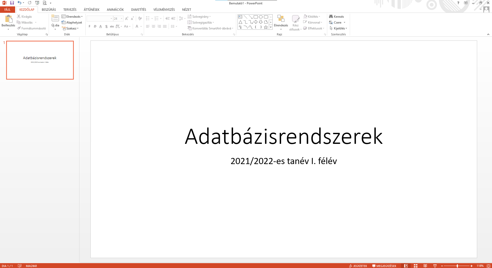

Adatbázisrendszerek
Ez a kurzus az adatbázisrendszerek alapjait tartalmazza
Tartalom
- Adatbáziskezelés alapfogalmai
- ER-modell és relációs adatmodell
- PostgreSQL története
- Projekció, csoportképzés
- Az SQL nyelv alapjai
- SQL DDL, DML, DQL, DCL parancsai
- noSQL adatmodellek
